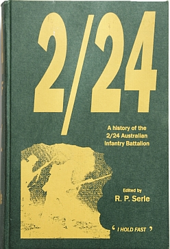

2/24th Items for sale
These items may be purchased from
Treasurer
2/24th Battalion Assoc.,
19 Maree Court
Rowville
Vic 3178
- Payment by cheque made out to '2/24 AIF Battalion Association Inc.'
- Prices include postage within Australia.
Official History of 2/24 Australian Infantry Battalion -- $65.00 each [New price]

Pens with logo of 2/24 Australian Infantry Battalion -- $20.00 per set of 5

Battalion Tie -- $25.00 each (association members only)
For purchase by 2/24 Association members only.

Lapel Badge [1.5cm wide] -- $10.00 each (association members only)
For purchase by 2/24 Association members only.

Please note:
- Ties and Badges are for purchase by 2/24 Association members only.
- The pens and history of the 2/24 are available for open purchase.
- Members may order by email. See Furphy Flyer for details and email address